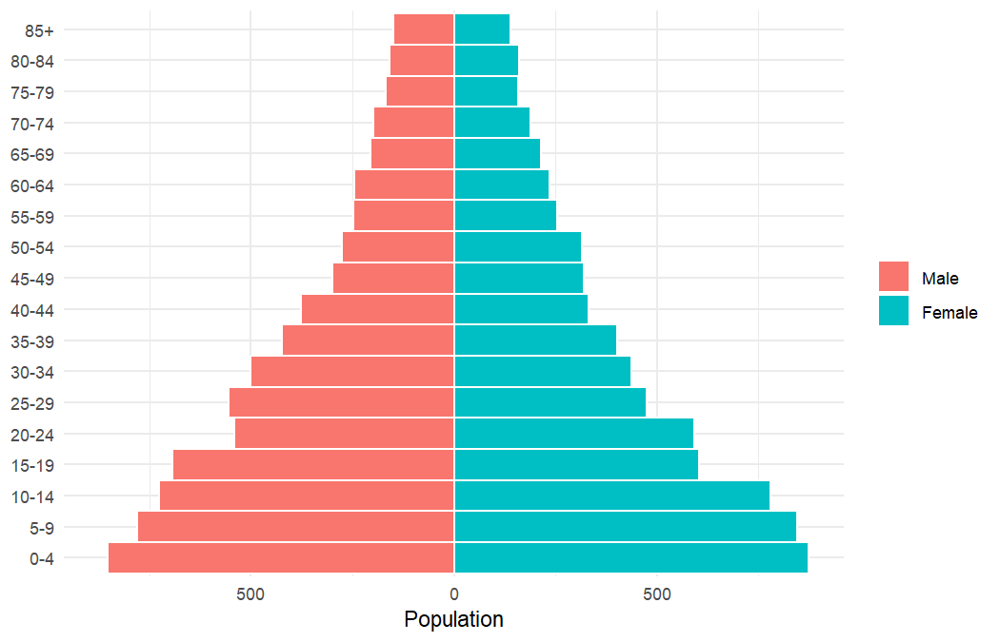
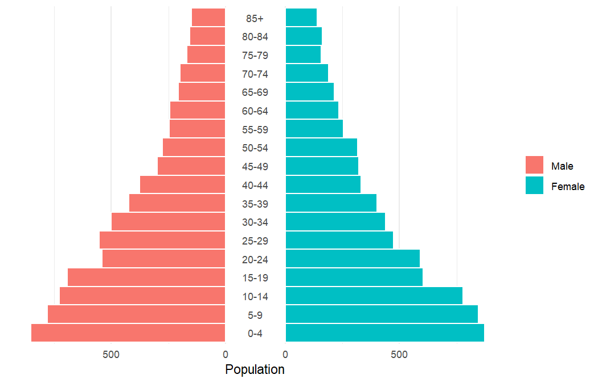
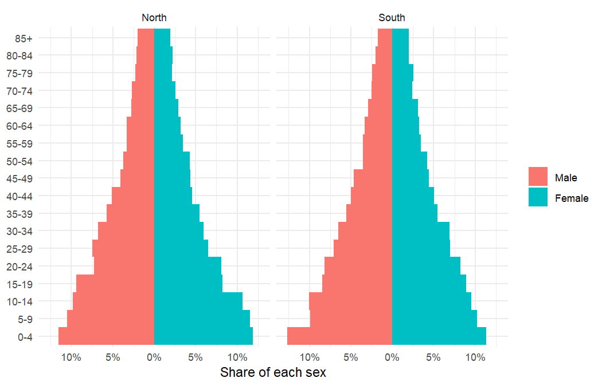
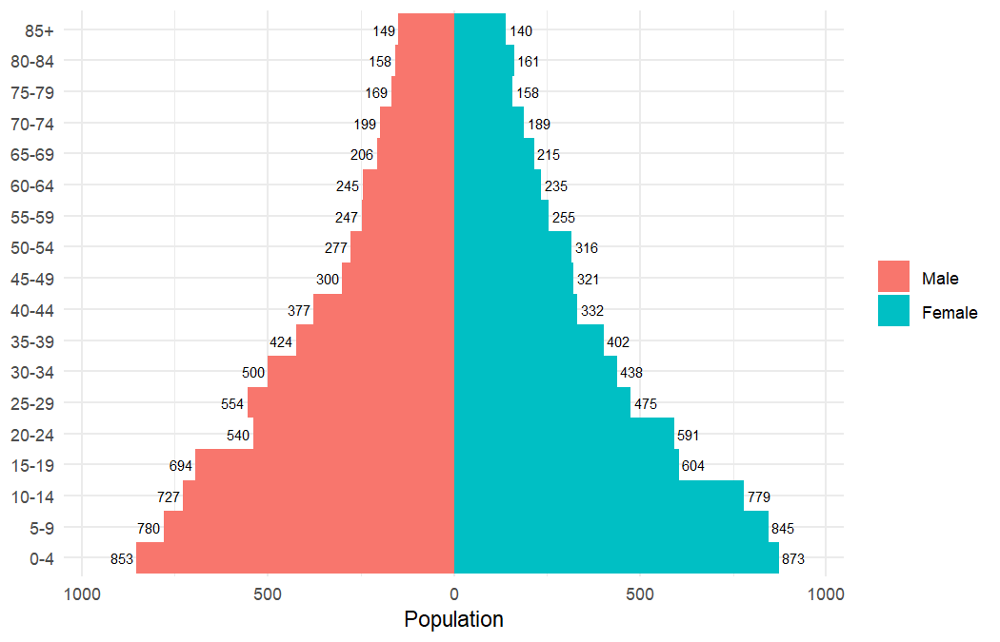
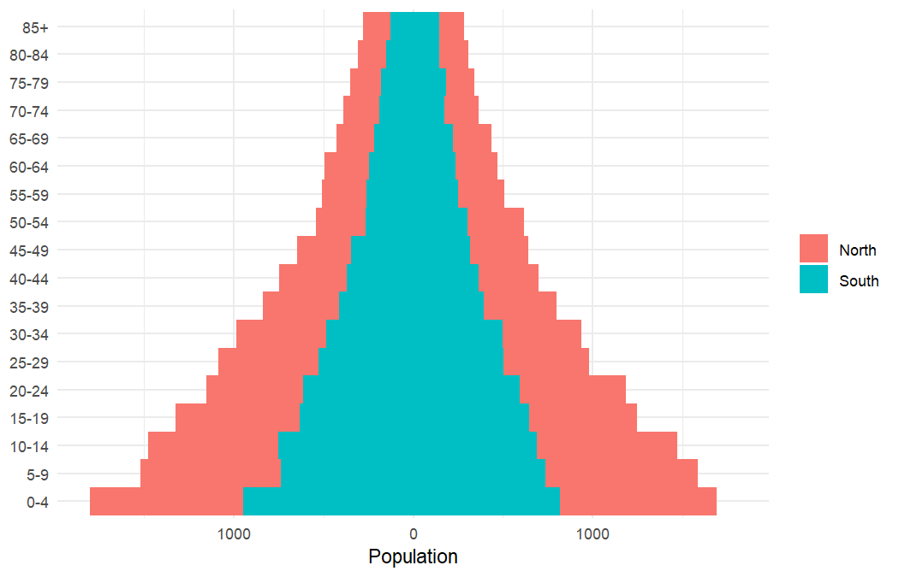

ggpyramid is a ggplot2 extension for building population pyramids: back-to-back bar charts of a population by age group and sex. A pyramid is one more layer in an ordinary ggplot, so scales, facets, themes and further layers work as they do anywhere else in ggplot2. The package is in early development.
Installation
You can install the development version of ggpyramid from GitHub with:
# install.packages("pak")
pak::pak("matanhakim/ggpyramid")Example
geom_pyramid() draws the bars. It sums a value when one is mapped, as here, and counts rows when it is not, so it accepts both aggregated data and individual records. The example data are synthetic.
library(ggplot2)
library(ggpyramid)
ages <- c(paste0(seq(0, 80, 5), "-", seq(4, 84, 5)), "85+")
set.seed(1)
pop <- expand.grid(
age = factor(ages, ages),
sex = factor(c("Male", "Female"), c("Male", "Female")),
region = c("North", "South")
)
pop$n <- round(1000 * exp(-as.integer(pop$age) / 9) * runif(nrow(pop), 0.9, 1.1))
ggplot(subset(pop, region == "North"), aes(x = n, y = age, fill = sex)) +
geom_pyramid(width = 1, colour = "white") +
coord_pyramid() +
labs(x = "Population", y = NULL, fill = NULL) +
theme_minimal()
coord_pyramid() takes care of the axes. It labels both sides without a minus sign and gives them the same range, and it can move the age axis to the right, to both sides, or into a gap in the centre of the pyramid:
ggplot(subset(pop, region == "North"), aes(x = n, y = age, fill = sex)) +
geom_pyramid(width = 1, colour = "white") +
coord_pyramid(age_axis = "centre") +
labs(x = "Population", y = NULL, fill = NULL) +
theme_minimal() +
theme(panel.grid.major.y = element_blank())
denominator turns the bars into proportions, of the whole panel or of each side, and each facet gets its own denominator.
ggplot(pop, aes(x = n, y = age, fill = sex)) +
geom_pyramid(denominator = "side", width = 1) +
scale_x_continuous(labels = scales::label_percent()) +
coord_pyramid() +
facet_wrap(vars(region)) +
labs(x = "Share of each sex", y = NULL, fill = NULL) +
theme_minimal()
position_pyramid() does the mirroring, so any other layer can join the pyramid with position = "pyramid":
ggplot(subset(pop, region == "North"), aes(x = n, y = age, fill = sex)) +
geom_pyramid(width = 1) +
geom_text(aes(label = n, hjust = -0.15), position = "pyramid", size = 2.5) +
scale_x_continuous(expand = expansion(mult = 0.1)) +
coord_pyramid() +
labs(x = "Population", y = NULL, fill = NULL) +
theme_minimal()
The side of each bar comes from fill unless side is mapped. Mapping it separately stacks subgroups within each side:
ggplot(pop, aes(x = n, y = age, fill = region, side = sex)) +
geom_pyramid(width = 1) +
coord_pyramid() +
labs(x = "Population", y = NULL, fill = NULL) +
theme_minimal()